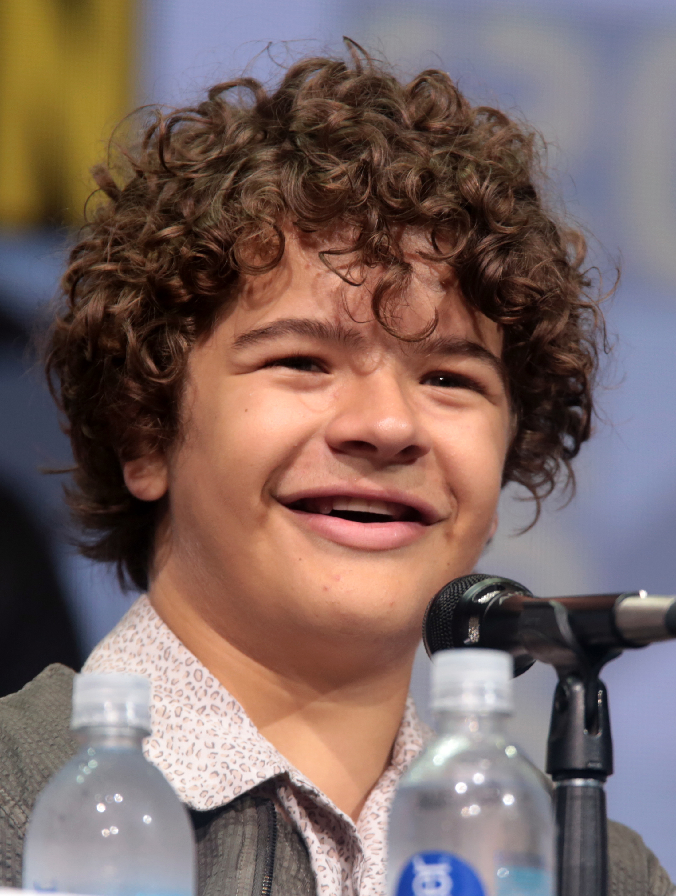

Millie Bobby Brown
Bobby Brown speelt de hoofdrolspeler Eleven in de serie. Ze is geboren op 19 februari 2004 in Marbella in Spanje geboren. Later is ze naar het Verenigd Koningrijk verhuisd.Door deze rol heeft ze meerdere prijzen gewonnen en is ze heel populair geworden. Ze heeft later in meerdere films gespeeld zoals Enola Holmes en Godzilla.
Noah Schnapp
Schnapp speelt Will in de serie. Hij is op 3 oktober 2004 geboren in New York City. Stranger Things was zijn eerste grote rol en zijn carière is met deze serie pas echt tot stand gekomen.. Nu heeft hij meer dan 19 miljoen fans.
Finn Wolfhard
Wolfhard speelt Mike in de serie. Hij is geboren op 23 december 2002 in Vancouver. Voor Stranger Things speelde hij al een grote rol in de horrorfilms It en It Chapter Two van Stephen King. Naast acteren is hij ook goed in zingen en gitaar spellen. Hij was de zanger en gitarist van de band Calpurnia die in 2019 uit elkaar gegaan is. Na Stranger Things heeft hij nog in een aantal films gespeeld, zoals The Turning en The Goldfinch.
Gaten Materazzo
Materazzo speelt Dustin in de serie. Gaetano John Matarazzo (Gaten Materazzo) is geboren op 28 september 2002 in Connecticut. Hij begon zijn carrière met in een aantal musicals te spelen. Van jongs af aan had hij een passie voor zingen. Gaten heeft een botaandoening genaamd CCD, Dustin in de serie heeft die dus ook. Hij spendeert veel van zijn tijd met het bewustmaken van zijn aandoening in de media.
Caleb McLauglin
McLauglin speelt Lucas in de serie. Hij was geboren op 13 oktober in 2001 in New York. Hij begon zijn carrière met zijn rol als Simba in de musicalversie van The Lion King. Hij heeft een aantal prijzen gewonnen met zijn rol als Lucas Sinclair in de serie Stranger Things.
 Sadie Sink
Sadie Sink
Sink speelt Maxine in de serie. Ze is geboren op 16 april 2002 in Brenham, Texas/ Ze heeft 3 oudere broers en een jonger zusje. Ook zij begon met Musicals door haar obsessie met High School Musical. Later heeft ze nog een rol gehad in de horrorfilm Eli.
 Winona Ryder
Winona Ryder
Winona Ryder speelt Joyce in de serie. Ze is geboren op 29 oktober 1971 in Minnesota. Ze heeft een Golden Globe gewonnen met haar rol in The Age Of Innocence. Ze werd ook 2 keer genomineerd voor een oscar. Ze speelde in de populaire film Edward Scissorhands. In 2001 werd ze opgepakt door diefstal in een kledingwinkel in Beverly Hills ter waarde van 20.00 euro. Ze werd dezelfde avond weer vrijgelaten.
 David Harbour
David Harbour
Harbour speelt Jim Hopper in de serie. Hij is op 10 april 1975 geboren in New York. Hij heeft in films, series en theater gespeeld. Hij begon met in theater spelen in 1999. Hij leidt aan een bipolaire stoornis en is daar vrij open over. Hij is getrouwd met de zangeres Lily Allen.